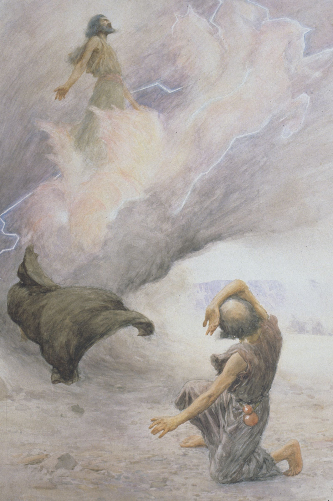
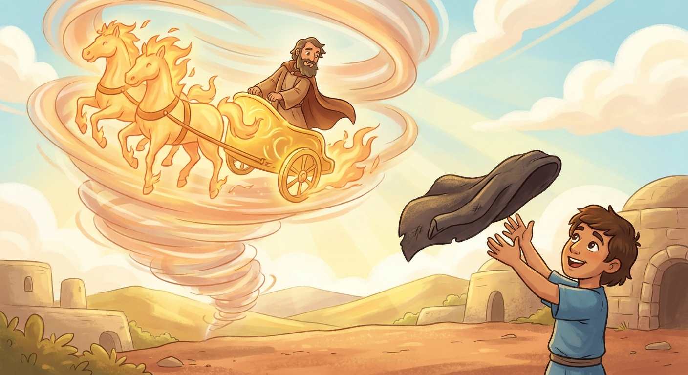
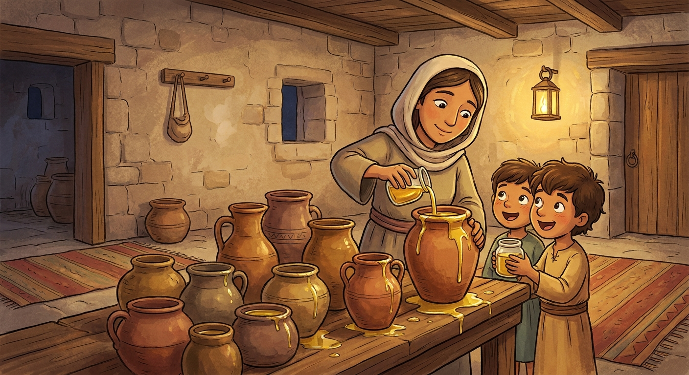
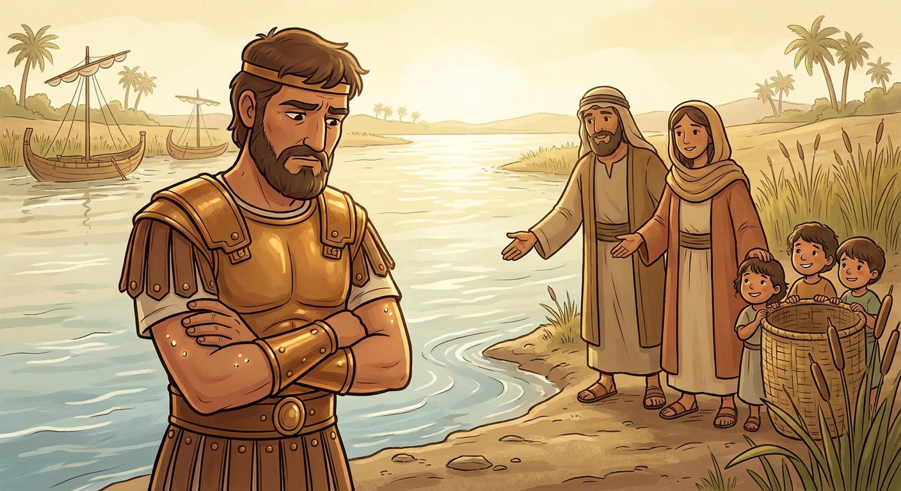
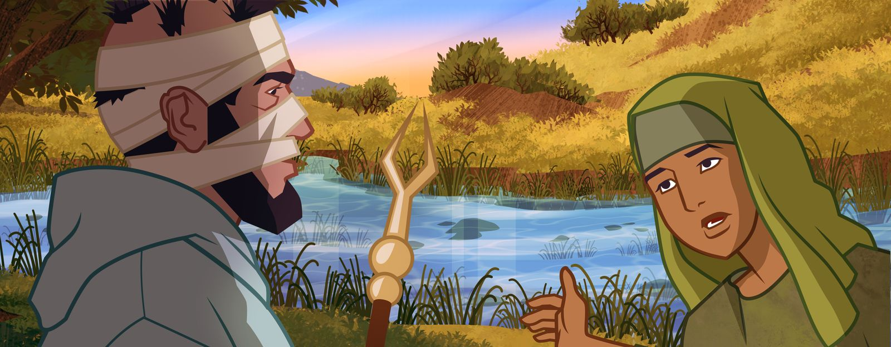
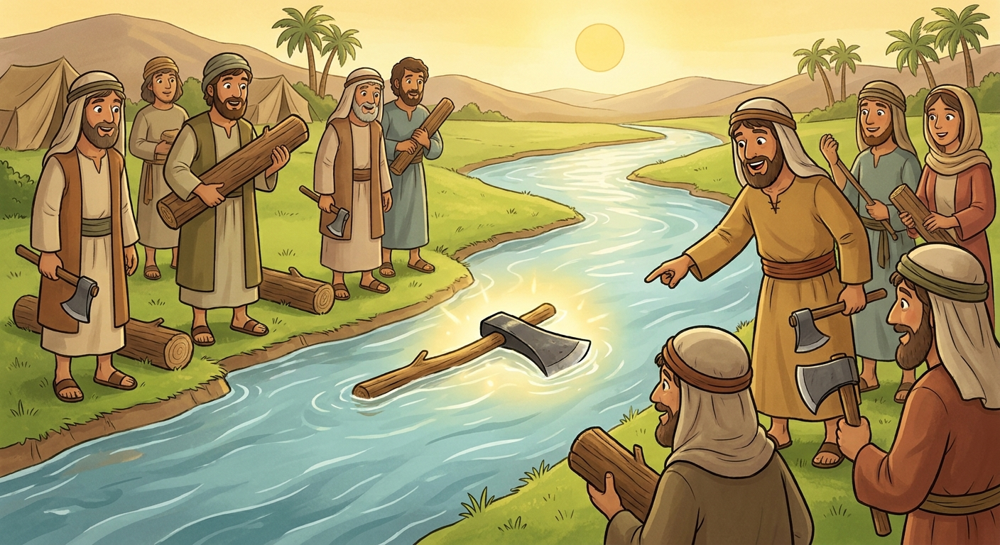
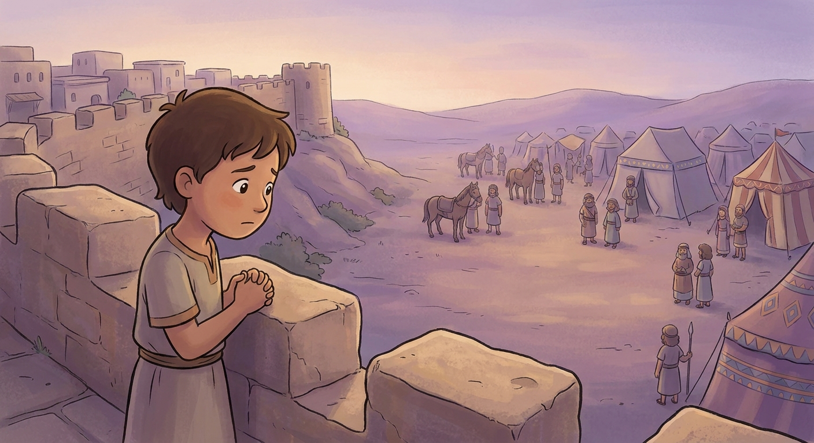

2 Kings 6:16 · "Fear not: for they that be with us are more than they that be with them."
2 Kings 2-7 · Come Follow Me, July 6-12Primary (9-year-olds), Elk Ridge 15th Ward~35 min
Objective. Run the miracles of the prophet Elisha like a set of little scenes so the kids feel two things. First, God really works miracles, and a prophet acts with His power. Second, the way we get those blessings is by doing the small, simple things a prophet asks, even when they feel too easy (Naaman) or too scary (the invisible army). It lands on the truth that "they that be with us are more than they that be with them": God's help surrounds us even when we cannot see it.
↩ Last week / this week
Last week we followed brave Elijah, who called fire from heaven and heard the still small voice. This week is episode 2: Elijah's work is finished, God takes him up in a chariot of fire, and his helper Elisha catches Elijah's fallen cloak and becomes the new prophet. God never leaves His children without a prophet.
Last weekElijah
→
2 Kings 2Chariot of fire
→
Passed onThe mantle
→
Prophet nowElisha
There is always a prophet in Israel.
01
The chariot of fire
~4 min
Opening question: When someone really important has a job to do, and then it is time for them to stop, who takes over? Today a prophet's job gets handed to the next person, in the most amazing way in the whole Bible.
Elijah had a young helper named Elisha (say it together: ee-LIE-shuh) who followed him everywhere and would not leave his side. When it was time for Elijah's mission to end, God did not just let him get old and die. A chariot of fire and horses of fire appeared, and Elijah went up to heaven in a whirlwind. Elisha watched Elijah's cloak fall, picked it up, and became the new prophet.

"Elijah Ascending into Heaven," by W. H. Margetson. Elisha watched and cried, "My father, my father, the chariot of Israel." Gospel Art · the Church

Elisha catches Elijah's fallen cloak, his "mantle." The prophet's job passes to him.
Point to make
A "mantle" was a cloak, but it stood for the calling. When we say a prophet's mantle passes to the next one, this is the picture. We still have a living prophet today.
02
The widow's little jar of oil
~6 min
A poor mom came to Elisha, crying. Her husband had died and she owed money, and a man was going to take her two boys away to pay the debt. All she had left in the whole house was one little jar of oil.
Elisha told her something strange: go borrow as many empty jars as you can from all your neighbors, then start pouring. So she did.
Activity · pour the oil
Keep pouring. Watch what happens.
She only had one little jar. Tap to pour it into the borrowed jars, one by one.
One little jar of oil. Start pouring.
The oil never stopped! It kept flowing and flowing until every single borrowed jar was full. It only stopped when they ran out of jars, not when they ran out of oil. She sold the oil, paid the debt, and kept her boys. God gave more than enough.

One little jar filled many. The blessing was bigger than the problem.
"…Go, borrow thee vessels abroad of all thy neighbours, even empty vessels; borrow not a few… and thou shalt pour out into all those vessels…"
🔎 Focus question
Why do you think Elisha told her to borrow a lot of jars? (The number of jars she gathered showed how much she trusted God. More faith, more room for the blessing.)
03
Naaman: too simple to believe
~9 min
Now the big one. Naaman (say it: NAY-man) was a rich, powerful army captain from another country. He had everything, except he had a horrible sickness on his skin called leprosy. A little servant girl from Israel told him, "There is a prophet in Israel who could heal you." So Naaman traveled all the way to Elisha's house with horses, chariots, and bags of treasure.
Elisha did not even come outside. He just sent a messenger with one instruction: go wash in the Jordan River seven times. That is it. Naaman was furious. He expected something big and important, not a dip in a plain, muddy little river.

Naaman almost went home angry. The instruction felt too simple for such an important man.
Stop and ask
Has a grown-up ever asked you to do something small and simple (say your prayers, be kind, read a verse) and part of you thought, that is too easy to really matter? That is exactly Naaman's problem.
His servants gently said: if the prophet had asked you to do something hard, you would have done it. Why not do the easy thing? So Naaman swallowed his pride and walked into the river. Count the dips out loud with me.
Activity · dip seven times
Wash in the Jordan
Tap to dip Naaman under the water. Count with the class: one… two… three…
Zero dips so far. Would obeying really matter?
Healed! After the seventh dip his skin came back clean, like a little child's. The miracle was real, but it only came after he obeyed the simple thing. Naaman went back and told Elisha, "Now I know there is no God in all the earth, but in Israel."

Naaman comes up from the Jordan healed and full of joy. Gospel Art · the Church
"…if the prophet had bid thee do some great thing, wouldest thou not have done it?… Then went he down, and dipped himself seven times in Jordan… and his flesh came again like unto the flesh of a little child…"
🔎 Focus question
Naaman almost missed his miracle because the prophet's instruction felt too small. What small, simple things does the prophet (and the Holy Ghost) ask us to do?
Let's practice being like the humble Naaman, not the proud Naaman. Read each one and pick: is that person doing the simple thing God asks, or too proud to bother?
1. Your leader asks the class to read just one verse of scripture each night. It seems too short to matter, so you decide it is not worth doing.
Too proud to bother. Just like Naaman almost did. The small things are usually where the miracle hides. One verse a night really does add up.
2. You feel a quiet nudge to go say sorry to a friend. It feels small and a little embarrassing, but you go do it anyway.
Doing the simple thing. That quiet nudge is the Holy Ghost. Acting on the small, humble prompting is exactly what Naaman finally did.
3. The prophet asks kids to be kind and include people who are left out. You think, "That's too easy, real obedience should be something big," and skip it.
Too proud to bother. Simple does not mean unimportant. Being kind and including others is one of the biggest things we can actually do.
04
Even the little problems
~3 min
Quick one. Some men were chopping wood by the river, and one man's iron axe head flew off the handle and sank. He was upset because it was borrowed, and iron sinks like a rock. Elisha threw a stick in the water, and the heavy iron axe head floated right up to the top so the man could grab it.

Iron floating on water. God cares about the small problems too, not just the giant ones.
Point to make
A lost axe head is a little problem. But God cared. Nothing you worry about is too small to pray about.
05
The army you cannot see
~7 min
Here is the big finish. An enemy king was angry at Elisha and sent a huge army with horses and chariots to surround the whole city at night. In the morning, Elisha's young servant woke up, looked out, and saw enemy soldiers everywhere. He was terrified. "Oh no, what are we going to do?!"
Elisha was not scared even a little. He said the words at the top of this page: "Fear not: for they that be with us are more than they that be with them." The servant thought, more? There are only two of us! Then Elisha prayed: "Lord, open his eyes." Tap the button and see what the servant saw.
Activity · open his eyes
What was really on the mountain
This is what the servant saw before Elisha prayed. Now open his eyes.

The servant only saw the enemy. He felt all alone.
"…Fear not: for they that be with us are more than they that be with them… And the Lord opened the eyes of the young man; and he saw: and, behold, the mountain was full of horses and chariots of fire round about Elisha."
🔎 Focus question
The help was there the whole time. The servant just could not see it yet. When you feel scared or alone, what has God given us to remember that His help is all around us?
06
Watch
~3 min
Short animated tellings from the Church's scripture stories for children. Pick one (or watch both if there is time).
Challenge for the week: pick one small, simple thing the prophet or the Holy Ghost asks, and just do it. Say your prayers, read a verse, be kind to someone left out, say sorry. Do not skip it because it feels too easy.
Remember: when you feel scared or alone, "they that be with us are more than they that be with them." God's help is all around you even when you cannot see it.
Brief testimony: God still speaks through a living prophet today, He works real miracles, and He gives us more than enough when we trust Him with the small things. Close with prayer.